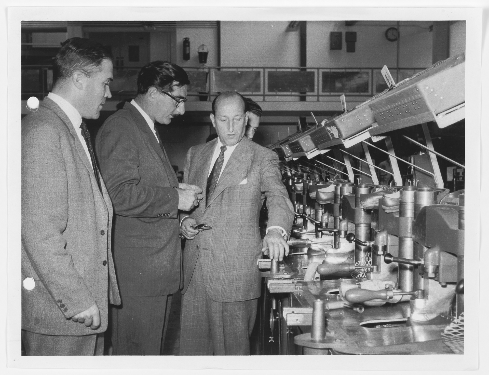
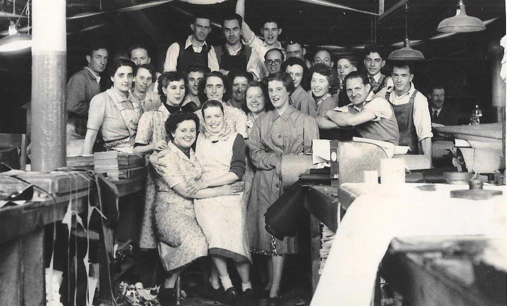
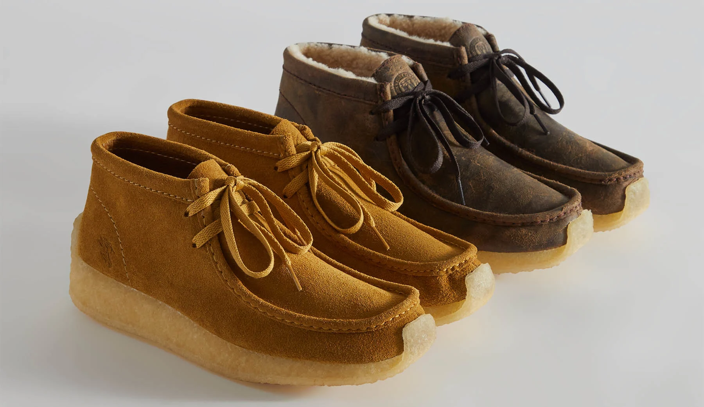
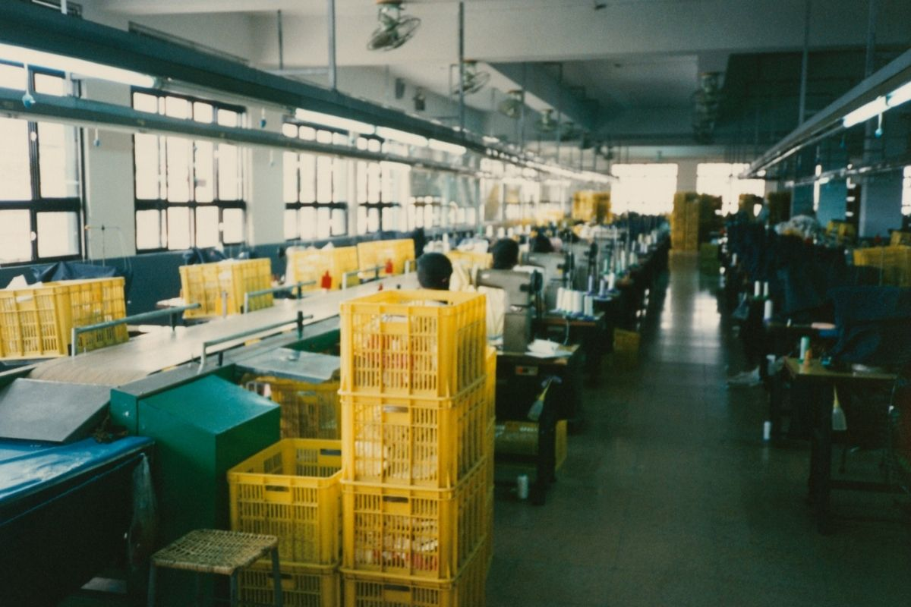

We are Clerks
Founded in 1825, Clerks has been a leader in footwear design and craftsmanship for nearly two centuries. From humble beginnings in Street, Somerset, our family-owned company has grown into a global brand renowned for quality, comfort and innovation.
Shop the collection
Our Heritage
With nearly two centuries of history, Clerks has established itself as a leader in footwear craftsmanship. From our humble beginnings in Street, Somerset, we have grown into a global brand trusted by millions. Our commitment to quality and innovation has remained constant throughout generations.

Craftsmanship & Quality
Every pair of Clerks shoes is meticulously crafted with attention to detail and precision. Our skilled artisans combine traditional techniques with modern technology to create footwear that stands the test of time. We believe in using only the finest materials and innovative construction methods.

Sustainability & Innovation
At Clerks, we are committed to sustainable practices and continuous innovation in our manufacturing processes. We invest in research and development to create products that are environmentally responsible, exploring new materials and techniques that benefit both our customers and the planet.

Global Community
Clerks serves customers across the globe, with a presence in over 100 countries. Our diverse range caters to men, women and children of all ages, offering styles for every occasion. We are proud to be part of communities worldwide, and remain dedicated to exceptional footwear and customer service.